Álvaro García
Desarrollador de aplicaciones multiplataforma
Icons made by Freepik from www.flaticon.com
Sobre mí
Terminados los estudios de Sistemas Microinformáticos en Red (SMR) y Desarrollo de Aplicaciones Multiplataforma (DAM).
Apasionado por la programación y los sistemas informáticos. En continua formación.
Aficionado al deporte y al desarrollo personal.
SecondLife
Aplicación para publicar artículos de segunda mano.
SecondLife permite el registro de usuarios que podrán publicar artículos que quieran vender.
Incluye registro e inicio de sesión de usuarios, publicación de artículos y edición de los mismos por parte del autor.
Este proyecto fue realizado como parte de la evaluación final de los módulos de Desarrollo de Interfaces y Programación de Servicios y Procesos.
El desarrollo se llevó acabo de forma conjunta con un compañero de clase, siguiendo una organización mediante la división de tareas divididas a su vez en otras más pequeñas.
Esto se hizo mediante issues, tags y milestones en Gitlab.
Características técnicas
Backend
- API REST
- NodeJS
- Express
- MongoDB
- Mongoose
- JWT
- Docker Compose
Frontend
- Android nativo
- Kotlin
- MVVM
- Lifecycle
- LiveData
- Retrofit
- Volley
Pantalla principal
Al inicio se pueden observar todos los artículos no vendidos publicados por los usuarios.
Para poder ver el detalle de un anuncio o añadir uno, habrá que tener la sesión iniciada.
Inicio de sesión
Al pulsar sobre un anuncio, sobre añadir uno o al pulsar en el botón de iniciar sesión en el menú, aparecerá el siguiente fragmento.
Desde aquí podremos iniciar sesión o acceder al fragmento de registro.
Menú lateral
En este Navigation Drawer podemos si tenemos la sesión iniciada.
Desde este menú podremos acceder a nuestro perfil, controles de sesión, categorías de productos y anuncios propios.
Perfil
Desde la pantalla de perfil podremos cambiar nuestros datos, siendo los más relevantes la foto, nombre y primer apellido y número de contacto.
Nuevo anuncio
Pulsando en el botón de la esquina inferior derecha de la pantalla de inicio, accederemos a la vista para añadir un producto.
Rellenaremos los campos de texto, así como cargar todas las fotos que deseemos.
Carga de fotos
Al pulsar sobre el botón de cargar una foto el usuario verá un Chooser inflado mediante un Intent.
Cuando pulsa sobre una, el texto del botón cambia por el nombre de la imagen, y se añade un nuevo botón debajo para seguir añadiendo más.
En cuanto a la persistencia, una vez el usuario decide guardar el producto, la imagen se convierte a base64 para mandarla al backend.
Desde el backend, al recibir el base64, se escribe mediante un buffer la imagen en un archivo .jpg, dentro de una carpeta para las fotos.
Detalle de un producto propio
Cuando pulsamos sobre un producto en la lista, nos llevará al detalle.
Si el producto es de nuestra autoría, el botón inferior nos dará la opción de editarlo.
Detalle de un producto
Si el producto no es nuestro, en lugar de darnos la opción de editarlo, nos dará la opción de contactar con el vendedor.
Al pulsar sobre el botón de contactar, nos mostrará mediante un Intent el dial con el número de teléfono del usuario introducido.
Control de edición
Los productos solo podrán ser editados por el mismo usuario que los creó. Esto está controlado tanto en el frontend como en el backend.
Periódico
Aplicación Android para periódico en Wordpress
Esta aplicación está destinada a periódicos que estén hechos en WordPress. La aplicación obtiene los datos de la API y los muestra de forma visual.
Incluye los datos más relevantes de las publicaciones y su contenido, categorías y marcadores.
Este proyecto lo realicé en el periodo de prácticas del ciclo formativo de DAM.
Características técnicas
Backend
- API REST v2 de WordPress
- SQLite
- Room
Frontend
- Android nativo
- Kotlin
- MVVM
- Lifecycle
- LiveData
- Volley
Pantalla principal
La pantalla principal muestra la lista de publicaciones. Desde cada elemento, se puede ver el título de la publicación, la fecha y la imagen y categoría principal.
Además, está la opción de compartir la publicación o de guardarla en marcadores.
Para este ejemplo se están obteniendo los datos del periódico estadounidense Time.
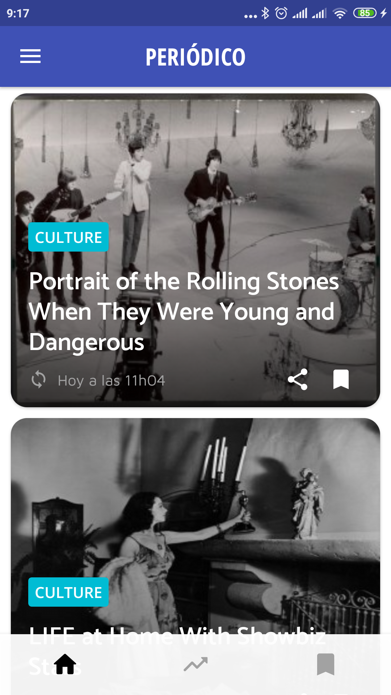
Menú lateral
En el Navigation Drawer se pueden observar las categorías para filtrar las publicaciones de la lista.
Las categorías se obtienen del WordPress en cuestión, en concreto las 19 primeras. La primera posición se deja para el inicio, es decir, la lista completa sin filtrar.
El color para las categorías se obtiene de un array estático en el código, pudiendo cambiarse cuando se desee.
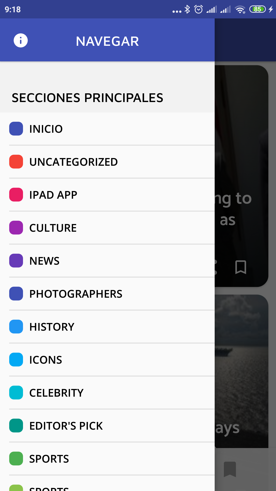
Paginación
Al poder tener un gran número de publicaciones creadas un WordPress, sería muy difícil cargar la lista entera por el gran volumen de datos a descargar y procesar.
Por ello se recurre a la paginación.
La aplicación se descarga solo las 10 primeras publicaciones de WordPress para mostrarlas en la lista.
Después, se aumentará el índece de la página y se irán cargando de 10 en 10 los posts conforme el usuario va bajando haciendo scroll.
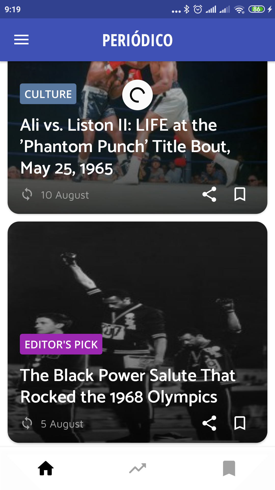
Detalle de una publicación
Desde el detalle de una publicación podremos ver la información más relevante de ésta.
Entre los datos mostrados están: imagen y autor de la misma, título,
fecha de publicación o de actualización (watch_later sync),
tiempo estimado de lectura (200 palabras por minuto) y contenido.
Para el color de la barra superior, se utiliza el mismo color que el de la categoría.
Carga de datos
Para recoger todos los datos necesarios de una publicación, se hace uso de los endpoints y objetos Post, Media, User y Category.
Una vez recogidos los datos, mediante el uso de mappers se llega hasta un objeto PostBO, que reune la información necesaria para la aplicación.
La librería utilizada como cliente HTTP es Volley, recibiendo JSON de los endpoints de WordPress y convirtiéndolo a objetos Java con GSON.
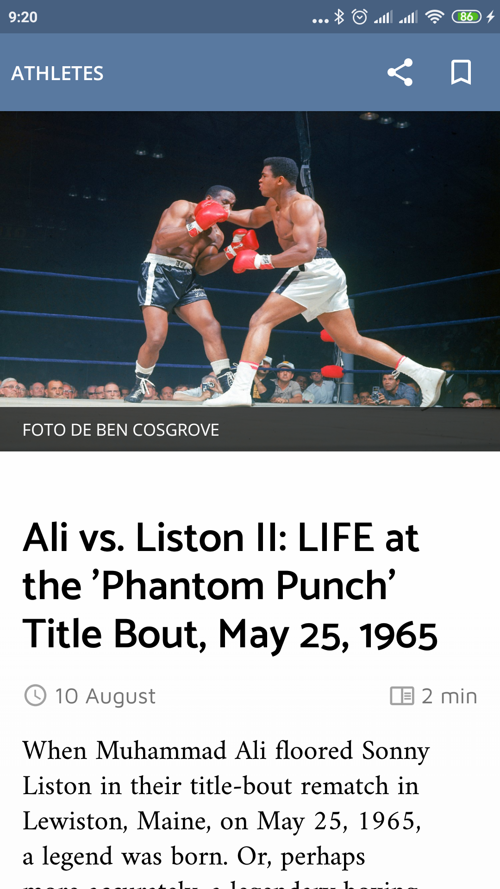
Detalle de una imagen
En el detalle de una publicación podremos clicar en su imagen para poder verla en detalle.
Este nuevo fragmento muestra la imagen a la que se le puede hacer zoom, el autor de la misma así como su descripción.
Marcadores
Está la opción de añadir una publicación a marcadores. Esto se hace desde su icono (bookmark_border bookmark), ubicado en el elemento de la lista,
la barra superior del detalle de la publicación y en la parte inferior del detalle, posterior a su lectura.
Persistencia
La persistencia de los marcadores se realiza en SQLite con la capa de abstracción de Room.
Lo único que se guarda es el identificador del Post, debiendo por tanto obtener toda la información desde WordPress de nuevo cuando queramos visualizar los marcadores.
Esto se hace así para obtener siempre los datos actualizados, ya que podrían ser modificados.
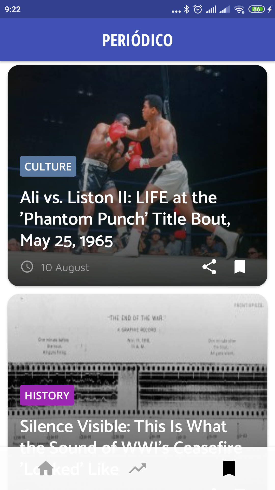
Training Progression
Aplicación para seguir el entrenamiento con pesas
Aplicación Android destinada al seguimiento de los entrenamientos con pesas, así como la progresión de los mismos.
El objetivo con este desarrollo es solucionar un problema que puede surgir durante el entrenamiento, la progresión.
Siendo la progresión indispensable para mejorar a nivel de fuerza e hipertrofia nuestro rendimiento deportivo, es necesario conocer en
todo momento que hicimos en el anterior entrenamiento del mismo tipo para aumentar de intensidad en el siguiente.
Training Progression ofrece una solución con dos tipos de progresión 'automática': progresión por peso levantado y progresión completa (peso levantado, series y repeticiones).
Además, incluye la opción de método Bilbo, ajuste de unidad de peso, copia de seguridad y exportación de datos en CSV para su posterior tratamiento.
La filosofía de este proyecto siempre ha sido la de depender del mínimo de servicios posibles, mínimos permisos necesarios y respeto por los datos del usuario.
Los datos pertenencen al usuario, permanecen en su dispositivo y no los tiene nadie más.
Work In Progress
La aplicación fue desarrollada para el módulo Proyecto Integrado de DAM. A pesar de haber terminado y aprobado este módulo y ciclo, Training Session aún no está terminado.
Se sigue trabajando en esta aplicación hasta terminarla.
Frontend
- Android nativo
- Kotlin
- MVVM
- Lifecycle
- LiveData
- Navigation
- Material
Inicio
La aplicación, al abrirla por primera vez, pregunta cuál unidad de peso quiere utilizar el usuario.
Después, deberá añadir su programa entrenamiento.
Tablas y relaciones
La aplicación consta de las tablas: TrainingSession, Exercises, Workout, Volume.
Las relaciones son tres, todas de uno a muchos. Un TrainingSession tendrá muchos modelos de Exercises,
un Exercise será entrenado con muchos Workouts, donde en cada Workout se hará varios Volumes (peso y repeticiones).
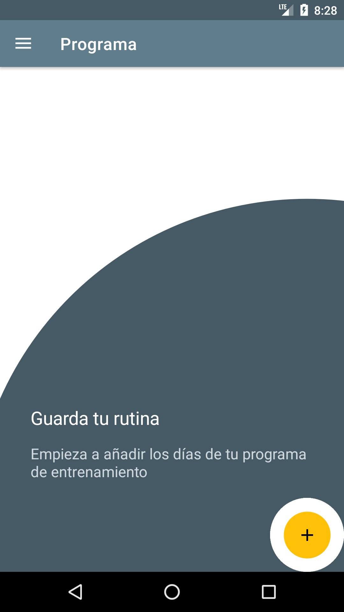
Programa de entrenamiento
Añadir un entrenamiento consiste en ponerle un nombre (lunes pierna, martes torso...) y crear todos los ejercicios que correspondan.
Cada ejercicio tendrá también su nombre, así como sus opciones.
El método Bilbo consiste en una única serie de entre 15 y 50 repeticiones, por lo cual al seleccionar esta opción,
solo nos dejará añadir una serie al entrenamiento y la progresión completa (la última) no será posible habilitarla.
La progresión por incremento de peso sumará automáticamente en cada entrenamiento el incremento que le configuremos al ejercicio.
En cuanto a la última progresión, nos saldrán los campos de texto mínimo y máximo de series y repeticiones. De esta forma, la progresión será:
Cuando se alcance el número máximo de repeticiones, se sumará una serie y se reseteará el número de repeticiones al mínimo.
Si el número de repeticiones y series ya está en el máximo, se resetearán ambos al mínimo y se subirá el peso por el incremento que le pongamos en el ejercicio.
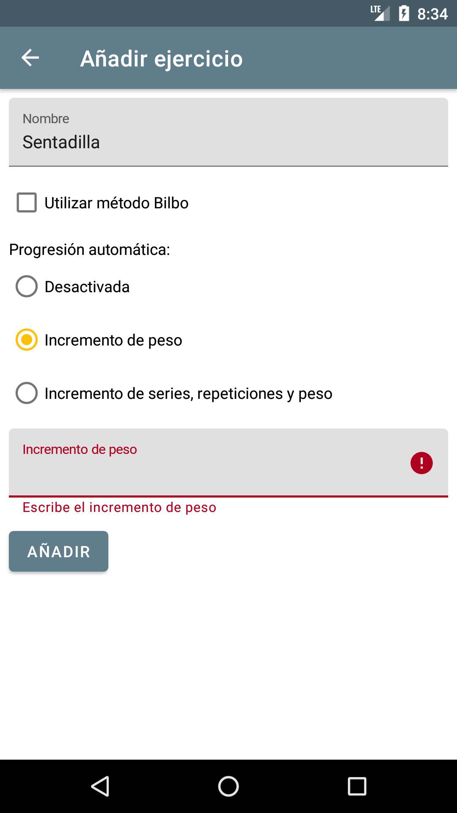
Menú lateral
En la barra superior, si estamos en alguno de los fragmentos principales, nos saldrá el icono de hamburguesa para abrir el menú lateral.
En caso de estar en otro fragmento que no sea uno principal, se mostrará el icono de la flecha hacia atrás con el fin de facilitar la navegación por la aplicación.
Desde el menú lateral podemos navegar por otros destinos de la app, incluido el Programa que hemos creado anteriormente, para poder modificarlo.
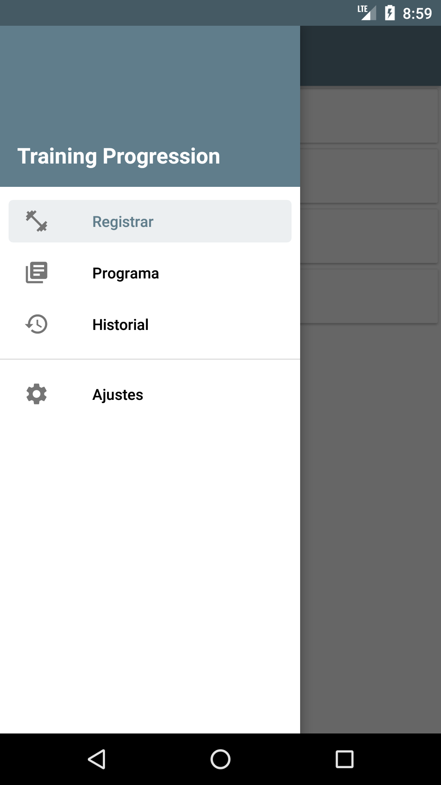
Entrenamientos
En la primera opción del menú lateral accedemos a lo que usuario utilizará más, el registro de entrenamientos.
Desde aquí el usuario podrá añadir diariamente los entrenamientos que haga, escogiendo que día o tipo de entrenamiento ha hecho
y añadiendo el volumen realizado para cada ejercicio.
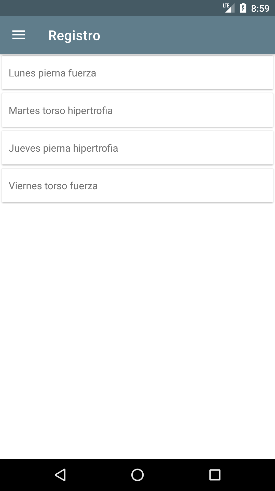
Ejercicios
Se añadirá el volumen realizado para cada ejercicio y la fecha de cuando se realizó. También se podrá añadir una nota opcional para cada entrenamiento de un ejercicio,
por ejemplo, sensaciones.
Con fin orientativo e informativo, se añadirá en el volumen lo último realizado en el mismo ejercicio.
Si la progresión en el ejercicio está activada, se añadirá con ésta agregada.
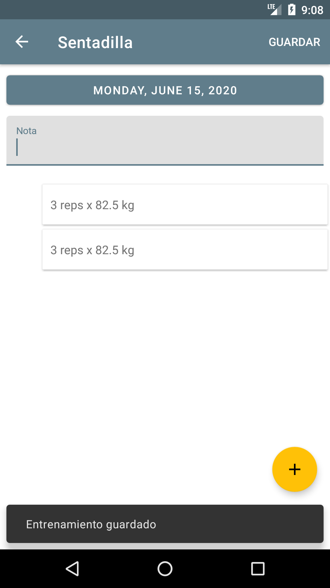
Historial
En ocasiones, nos gustará conocer como hemos estado progresando a lo largo del tiempo. Para ello está el historial.
Desde el historial, podremos visualizar cada uno de los entrenamientos (por ejercicio) que hemos realizado.
También podremos eliminar entradas individualmente deslizando la tarjeta hacia la derecha.
La opción más interesante se encuentra en el menú superior derecho, exportar. Al seleccionar esta opción,
generará un archivo en formato CSV que guardará donde le digamos. Con este formato, podremos abrir y tratar los datos en una hoja de cálculo,
procesándolos con una gran flexibilidad.
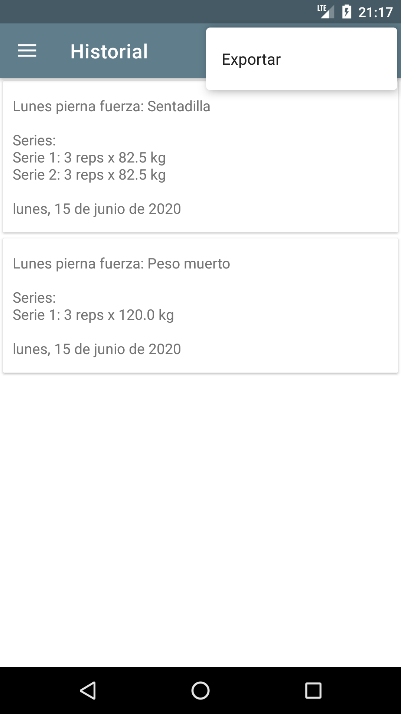
Ajustes
La pantalla de ajustes nos da algunas opciones interesantes.
El índice del método Bilbo por defecto es 0.03, siendo el establecido por el autor del mismo.
Podremos cambiarlo si este valor no se adecua bien a nuestra progesión. Al hacerlo, para calcular la máxima repetición
estimada se utilizará este índice.
La unidad de peso viene establecida por la que pusimos al iniciar Training Progression por primera vez.
Siempre la podrás cambiar desde aquí, actualizándose así todos los registros y mostrándose la unidad correspondiente (kg o lb).
Finalmente contamos con la copia de seguridad. Exportarla significará guardar la base de datos entera de la aplicación en la
ruta que queramos de nuestro teléfono móvil. Al importarla, se eliminarán todos los datos previos para reemplazarlos por esta base de datos importada.
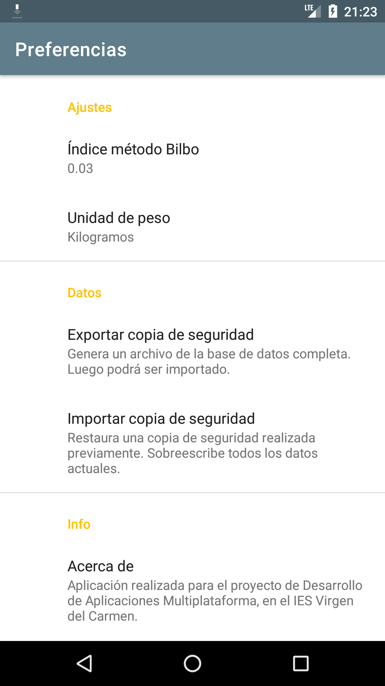
Redes sociales
Conóceme más:


Redes sociales
Conóceme más: